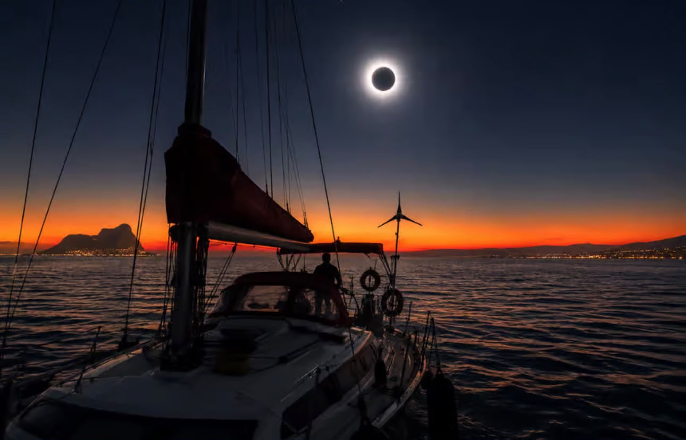
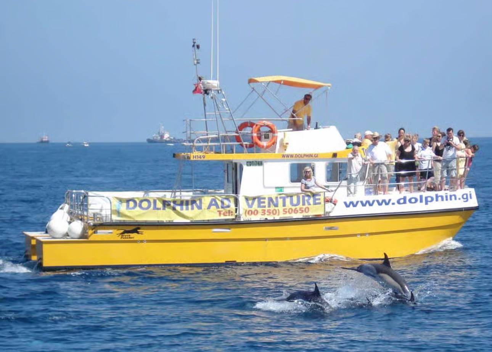

Strâmtoarea Gibraltar reprezintă o destinație turistică unică ,unde Europa întâlnește Africa,iar Marea Mediterană se întâlnește cu Oceanul Atlantic.
În timpul unei excursii la strâmtoare turiștii pot admira maimuțele ,pot face o plimbare cu barca pentru a vedea delfinii și, cu puțin noroc, pot asista la o spectaculoasă eclipsă de soare deasupra mării.
Unul dintre principalele puncte de atracție îl reprezintă fauna marină.În Strâmtoarea Gibraltar putem întâlni mai multe specii de delfinii și balene ,în habitatul lor natural.
Regiunea prezintă și un important patrimoniu istoric. Printre cele mai cunoscute atracții se numără Peștera Sfântului Mihail ,precum și alte peșteri de pe Stânca Gibraltarului, importante pentru cercetările arheologice. De asemenea, Gibraltarul este cunoscut pentru macacii berberi, singurele maimuțe sălbatice din Europa, care trăiesc pe Stânca Gibraltarului și reprezintă un simbol al regiunii. Printre obiectivele istorice se mai numără farul de la Europa Point și Tunelurile Marelui Asediu.
Un alt fenomen de interes pentru regiune este eclipsa totală de Soare din 2 august 2027, care va putea fi observată în anumite zone din apropierea strâmtorii. Acest eveniment astronomic poate contribui la atragerea turiștilor și a pasionaților de astronomie.
În concluzie, Strâmtoarea Gibraltar este una dintre cele mai spectaculoase frontiere geografice și culturale ale lumii, oferind o combinație rară de aventură pe mare, biodiversitate și multiculturalism într-un spațiu foarte restrâns.

